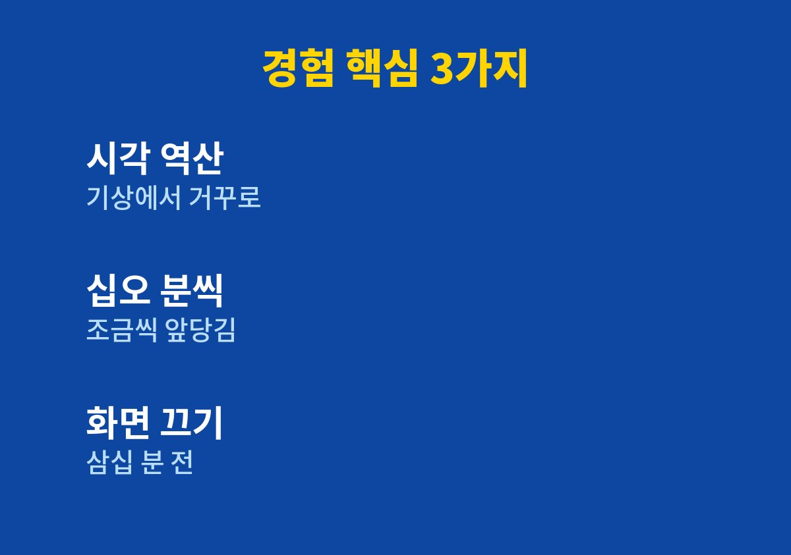
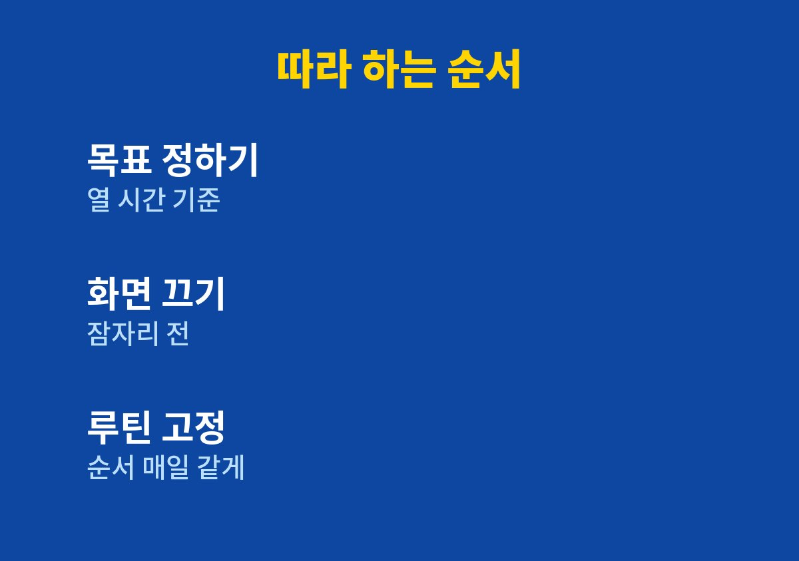

초등학생 수면시간이 모자라 아침마다 아이를 깨우느라 지친 부모에게 필요한 기준과 순서를 담았다.
미국수면의학회는 6~12세 아이에게 하루 9~12시간의 수면을 권고하며, 나는 이 기준으로 잠자리 시각을 거꾸로 계산해 맞추었다.
2026년 11월 기준으로 확인한 권고이고, 아이마다 필요한 양은 조금씩 다르다.
쇼핑몰 주문과 문의를 처리하다 보면 저녁 시간이 금세 사라진다.
그래서 우리 집 두 아이는 불을 늦게 끄는 날이 많았다.
아이를 세 번 넘게 불러도 일어나지 못하는 날이 잦았다.
겨우 일어나도 밥을 먹는 내내 멍한 표정이었다.
등교 준비가 늦어지니 나도 아이도 서로 짜증을 내기 시작했다.
처음에는 아이가 게으르다고만 생각했다.
하지만 따져 보니 잠든 시각이 늦은 것이 원인에 가까웠다.
잠자리에 드는 시각을 적어 보니 일주일 내내 비슷하게 늦었다.
기록해 보니 막연한 걱정이 구체적인 기준으로 바뀌어 대응하기 쉬웠다.
아이의 수면 부족은 의지 문제가 아니라 저녁 일과가 밀린 결과인 경우가 많다.
나 역시 일을 끝내는 시각이 늦어 아이들의 일과까지 함께 밀리고 있었다.
이 점을 인정하고 나서야 저녁 흐름을 바꿀 마음이 생겼다.
아이가 일어나야 하는 시각이 아침 일곱 시라면 열 시간을 자도록 밤 아홉 시에는 잠들어야 한다.
이렇게 계산하니 잠자리에 눕는 시각은 아홉 시 전후여야 했다.
우리 집은 그보다 한 시간 이상 늦게 자고 있었다는 사실이 분명해졌다.
그래서 한 번에 바꾸지 않고 십오 분씩 앞당기기로 정했다.
갑자기 한 시간을 당기면 아이가 누워서 뒤척이기만 하기 때문이다.
잠들기 직전까지 영상을 보면 아이가 더 놀고 싶어 해서 잠자리 협상이 길어졌다.
그래서 나는 화면을 끄는 시각을 먼저 정하는 쪽을 택했다.
아이에게 일방적으로 끄라고 하면 반발이 커져서 같이 시각을 정하자고 말했다.
아이가 직접 정한 규칙은 지키려는 마음이 훨씬 컸다.
나도 같은 시각에 휴대전화를 내려놓기로 약속했다.
첫 주에는 잠자리 시각만 십오 분 당기고 나머지는 건드리지 않았다.
둘째 주에는 화면을 끄는 시각을 잠자리 삼십 분 전으로 옮겼다.
셋째 주에는 목욕과 양치를 한 묶음으로 만들어 순서를 고정했다.
매주 변화는 하나만 주고 아이의 반응을 살폈다.
반응이 나쁘면 한 주 더 같은 단계를 유지했다.

| 항목 | 처음 | 바꾼 뒤 |
|---|---|---|
| 잠자리 시각 | 기준보다 한 시간 이상 늦음 | 기준에 가깝게 앞당김 |
| 화면 끄는 시각 | 잠자기 직전 | 잠자리 삼십 분 전 |
| 아침 기상 | 여러 번 불러야 함 | 한두 번 부르면 일어남 |
위 표는 우리 집 상황을 단순하게 정리한 것이며 아이마다 결과는 다를 수 있다.
변화는 크지 않았지만 아침에 아이를 부르는 횟수가 눈에 띄게 줄었다.
저녁에 서두르는 분위기가 줄어 아이와 대화할 시간이 생겼다.
잠자리에서 오늘 있었던 일을 묻는 것이 새로운 습관이 되었다.

이 순서는 아이가 거부감을 느끼지 않도록 변화 폭을 작게 잡은 것이 핵심이다.
해보니 아이를 일찍 재우는 일은 부모의 저녁 일정을 정리하는 일이기도 했다.
수면 시간을 지키는 일은 특정 결과를 약속하지 않지만 아이의 하루 컨디션을 지켜 주는 기본 습관이다.
부모가 먼저 모범을 보이면 규칙을 설명하는 시간이 줄어든다.
완벽하게 지키려 하기보다 오늘 십오 분만 앞당기는 편이 더 오래 간다.
낮에 심하게 졸려 하거나 코골이와 잠꼬대가 심하다면 소아청소년과 상담을 권한다.
오늘 밤 아이의 목표 잠자리 시각을 계산해 보는 것부터 시작하면 좋다.
※ 2026년 기준 개인 경험과 공식 기준을 바탕으로 정리한 일반 건강 정보이며, 증상이 계속되거나 지병이 있다면 전문의와 상담하시길 바란다.